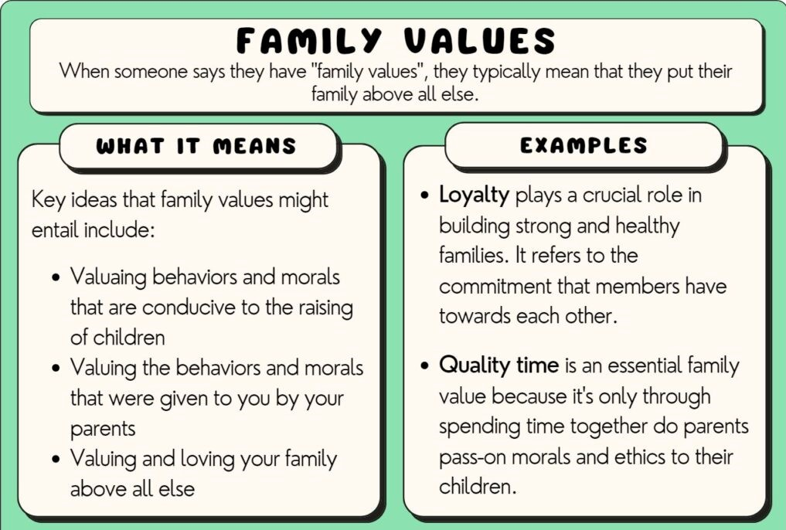
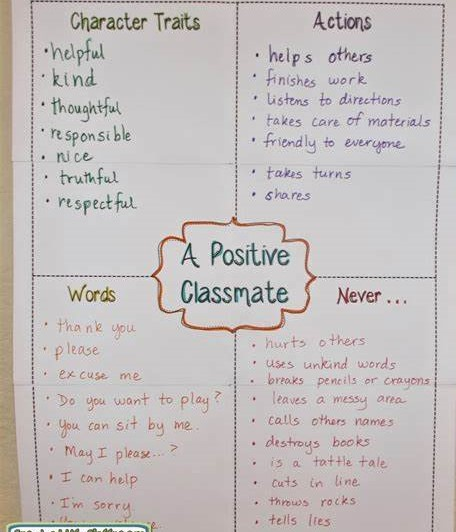

Journey to Joyful Marriage
Chapter 34 serves as a compelling example of how family values can be actively promoted through communication and advocacy. Acknowledging the societal call for individuals to support policies preserving the family as a cornerstone, the chapter emphasized the role of open communication in strengthening marriages and reinforcing family values like commitment and respect. This resonates with a real-life scenario where a community organization takes a proactive stance by organizing events and workshops, collaborating with experts to disseminate information on effective communication and parenting skills. Mirroring the chapter's emphasis, the organization actively engages in community outreach, sharing personal stories and partnering with local institutions to create a supportive network for families. Together, Chapter 34 and the community initiative illustrate the transformative impact of actively defending and sharing family principles, fostering a culture that values and prioritizes the well-being of families (Hawkins, 2024).
Hawkins (2012) explains the relationship that exists between the resilience of a society's family systems and its overall strength. The need of actively supporting family-centered values is discussed in Chapter 34. This involves educating others, taking part in community discussions, and pushing for laws that maintain the integrity of the family, embracing values and behaviors that are good for parenting, especially those that come from our parents, and giving family love and togetherness the highest priority are important. Commitment to these values promotes loyalty, which helps strong and healthy relationships with relatives to form. Parents can effectively teach essential values and ethics in their children by emphasizing time spent together, which strengthens the foundation of a healthy and strong family. It is said that this kind of involvement is necessary for creating an environment in which families may thrive in the face of modern difficulties and guarantee the continued existence of a strong moral and ethical basis for next generations. This chapter promotes an active approach to family values by highlighting individuals as important change agents in a cultural movement that places an emphasis on the well-being and stability of families as the cornerstone of advancing society.
Hawkins (2012) emphasizes the direct impact of this kind of positive community influence, in which thoughtful and caring discussions not only change individual viewpoints but also help the general public value and strengthen families. According to the chapter, these interactions, which are based on empathy and respect, may eliminate misconceptions and provide a nurturing environment for families. Through providing community members with based on evidence viewpoints and moral guidelines related to family relationships, individuals can significantly contribute to the establishment of an environment that supports the well-being and stability of families.
As the image below illustrates, it was created in a school setting where educators encourage young children to use positive language every day to prevent arguments. These illustrations have a good social impact on both our family and the environment around us. Respectful language can assist spouses in a marriage demonstrate their regard for one another. For instance, as the image suggests, sayings like "thank you," "never hurt others," "kind," "help others," and so on can make someone feel valued and grateful and create strong bonds of trust among families.
In Chapter 34, the transforming power of education is emphasized as a means of allowing people, especially students, to actively participate in conversations about family values including living together, the dignity of life, and building relationships. One example of how this is done is by presenting the Family Proclamation to increase understanding of Latter-day Saint teachings. The chapter shows how education positions people as change agents by preparing them to confront difficult social issues including family problems and pornography. In the end, Chapter 34 emphasizes how education helps people defend, share, and implement family values, which is good for one another and the larger community (Hawkins, 2024).
In order to enable people and families to defend and spread family values, education is the key. Collaboration between early childhood educators and families becomes essential when using family-centered techniques because it acknowledges and involves families in decisions about the upbringing and education of their children. Education is essential for promoting family values because it helps students think critically about and relate their own experiences to these ideals, which strengthens their loyalty. Moreover, empowerment in educational settings involves helping people in expressing themselves in a way that is self-affirming based on their past, language, and traditions. This allows them to fully engage in their communities. It is stressed that working together, families and schools may create a complete approach to family life by enabling families to actively participate in their children's education and overcoming differences in perspectives.